项目构成
判断交给 AI Agent，承接交给工作台。AI 只出「建议 + 原因 + 预期结果」，运营确认后才生效。
- 库存需求预测
- 库存盘点结论
- 库存库存总体分析
- 关键词关键词机会与风险
- 关键词子体关键词布局
- 竞品竞品威胁判定
- 广告广告异常与决策
- 广告广告目的标签
- 总览运营总览
- 3 页产品与库存
- 2 页面料预投
- 5 页关键词分析
- 2 页竞品分析
- 2 页广告分析
- 2 页Agent 配置与运行
- 1 页运营总览
工作台架构
7 个模块、17 个页面的完整结构。
工作流程
从进场到部署，七个环节按顺序推进。前两步是梳理，把数据和判断逻辑摸清；后五步是建设，逐步把判断交给 Agent。
问题
日常运营面对的判断量，靠人一个一个看根本看不过来。
比如：
- 快断货的产品 → 减少推广力度，减少广告投入，避免卖空
- 库存积压、已经产生仓储费的产品 → 匹配更激进的投放策略，加速出清
- 面料预投 → 57 个配色组各投多少，投多了压资金，投少了断货
每个产品情况不一样，策略也不一样。靠人一个一个判断，既慢又不一致。
这就是 Agent 解决的事
一个 Agent 看全部
不管是 100 个还是 1,500 个 ASIN，同一个 Agent 用同一套标准逐个过，不会遗漏、不会偏。
判断质量可沉淀
把已有的判断经验写进 Agent 的规则里，新人来了也是同一套标准。判断方法越用越准，不会因为人员变动丢掉。
产品与库存
管的是已经变成货的那部分——补货、清货、断货，先处理谁。
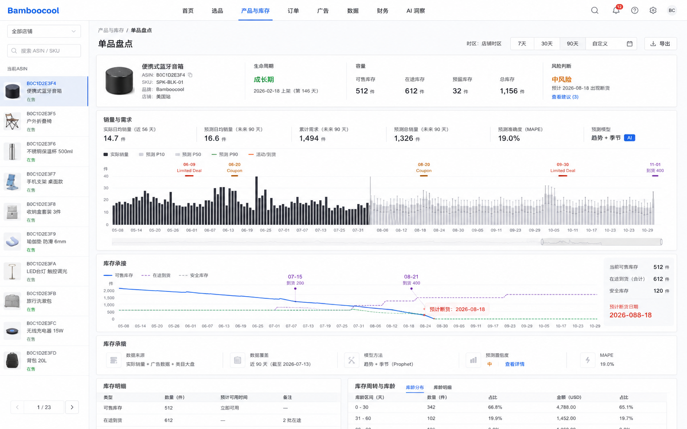
- 销量与需求预测（历史实销 + AI 预估未来 90 天）
- 库存承接（可售余额、在途到货、安全线、预计断货日）
- 风险判定（库存不足、超量备货、可用性异常）
- 库龄分布与仓储费估算
- 盘点结论（当下最该做什么，排在最前面）
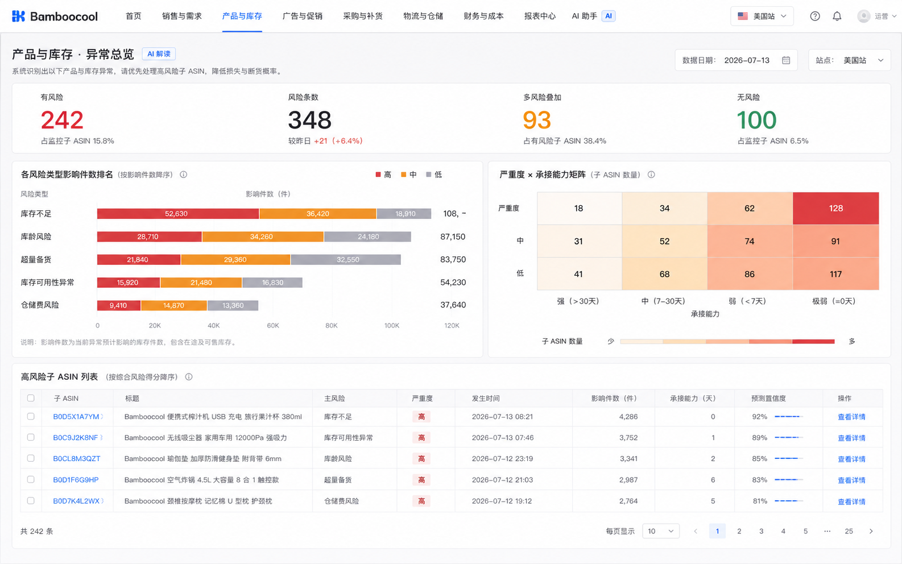
- 五类风险按影响件数排序
- 严重度 × 承接能力矩阵
- 高风险产品清单（可点进单品盘点）
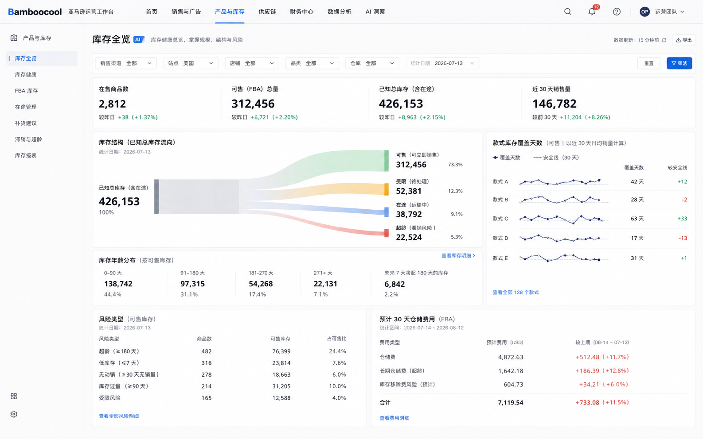
- 库存构成（可售、受限、在途、超龄）
- 库龄分段与未来 7 天跨龄量
- 估算仓储费（当月 + 超期附加）
逐日销量
被缺货扭曲
的影响有多大
生命周期哪一段
给出调整
逐日预测 + 区间
面料预投建议
按配色组聚合 → 预投表
库存风险判断
什么时候断货 / 什么时候超量
面料预投
管的是钱出去之前——这一轮面料投多少。判断对象是配色组（款号 × 组合），共 57 个。时间口径 M+2：8 月做的预投对应 10 月销量。考核标准：下单数 ÷ 预投数 ≥ 70%。
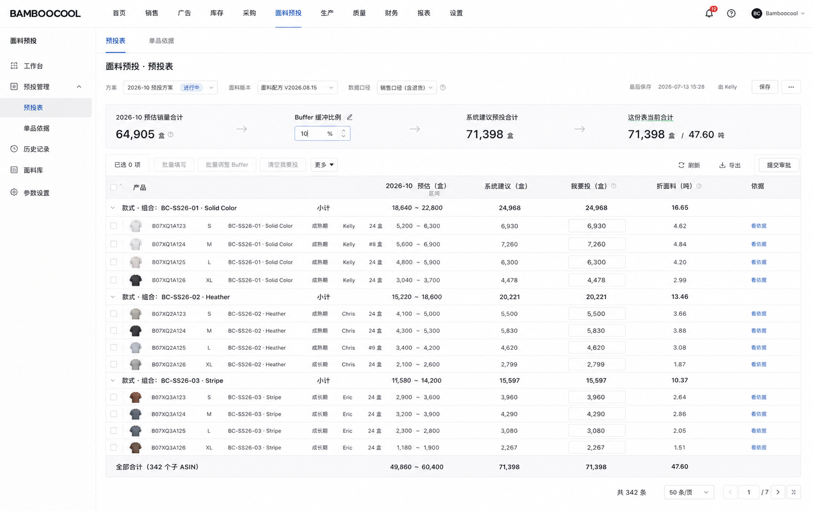
- 57 个配色组分两堆：需要复核的 + 按建议走的
- 每行标出为什么要复核（上轮投偏、下月有活动、款在爬坡）
- 预估销量区间（P10–P90）
- 系统建议盒数 + 可修改的「我要投」输入框
- 实时折算面料吨数
- 导出预投表交生产端
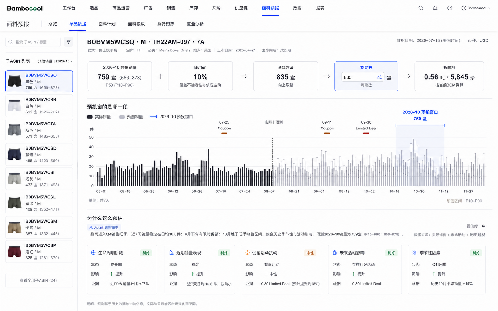
- 决策条：系统建议 → 我最终投 → 折面料
- 逐日柱状图：历史实销 + AI 预估，销售月高亮标出
- Agent 判断摘要（生命周期、近期表现、活动影响、季节因素）
- 三样反驳证据：去年同期、上一轮达成率、下月活动
- 尺码拆分（生产端按它拆条）
关键词分析
管的是流量从哪来——哪些词该动、该守、该抢。
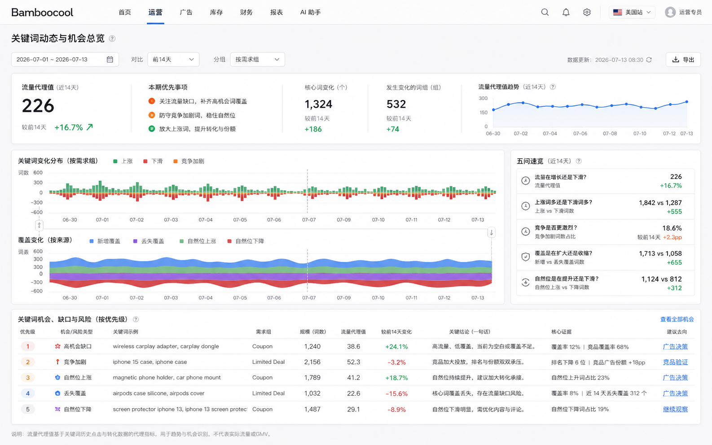
- 上涨 / 下滑词组统计
- 覆盖变化（新增覆盖、丢失覆盖）
- 优先事项清单：结论 + 依据 + 下一步去向
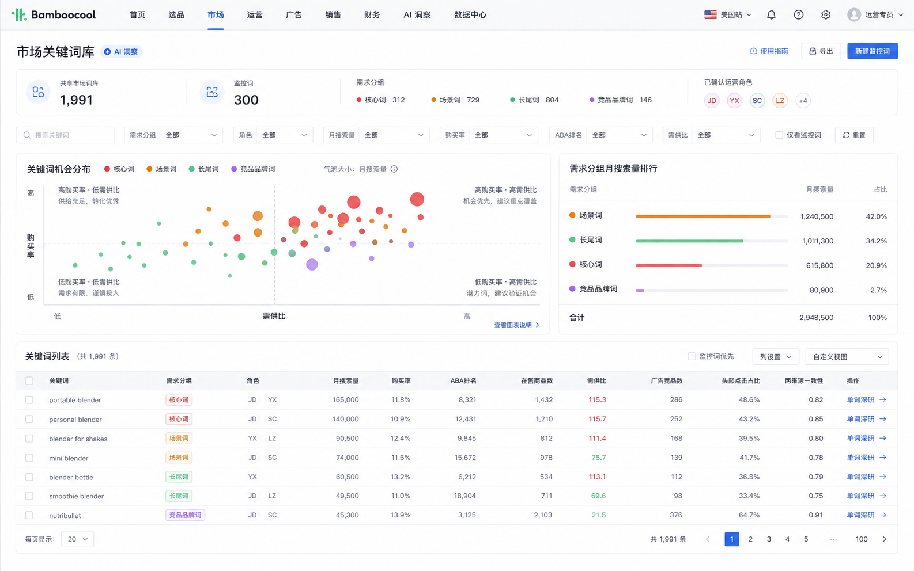
- 散点图：需供比 × 购买率，气泡大小为搜索量
- 高密度比较表（搜索量、购买率、排名、竞争度）
- 词角色分类（核心 / 场景 / 长尾 / 竞品品牌）
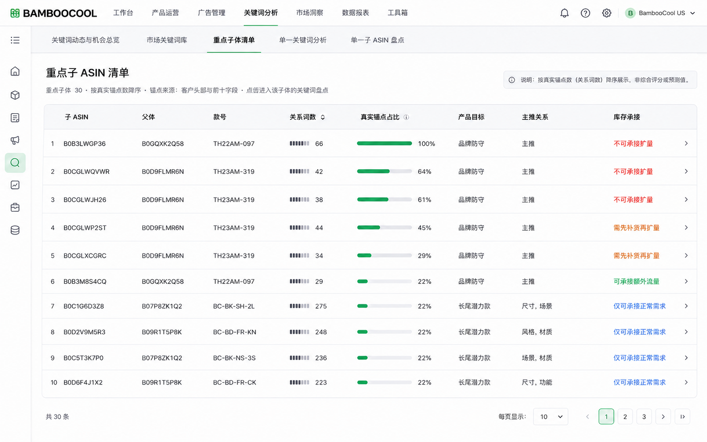
- 按真实锚点占比排序
- 关系词数、产品目标、主推关系
- 库存承接状态（能不能接住流量）
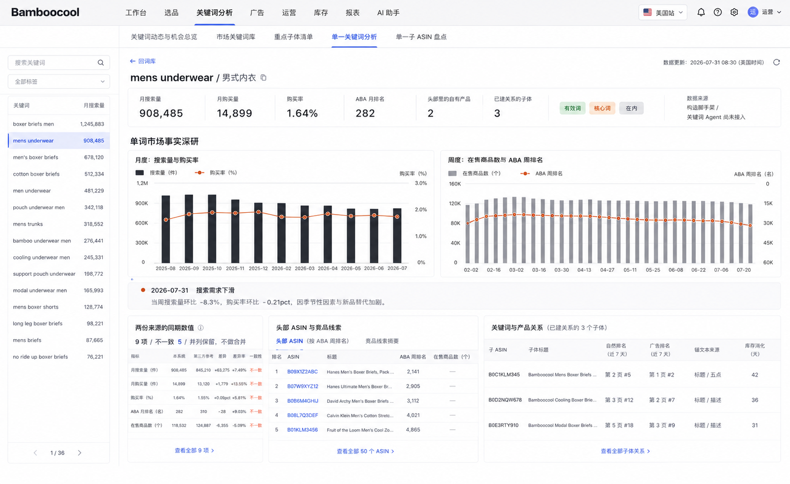
- 月频 / 周频趋势分开展示
- 两个数据来源对照
- 头部 ASIN 排名与产品关系
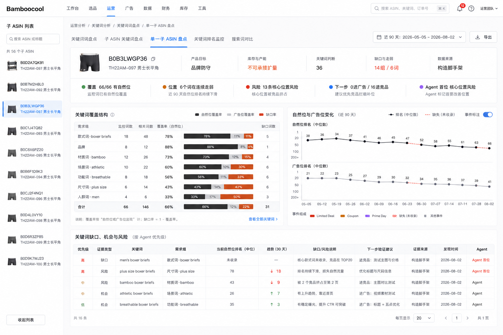
- 关键词覆盖矩阵（核心/场景/长尾 × 位置段）
- 自然位与广告位变化趋势
- 关键词缺口与机会清单
竞品分析
管的是对手在做什么——降价、排名变动、关键词抢位。
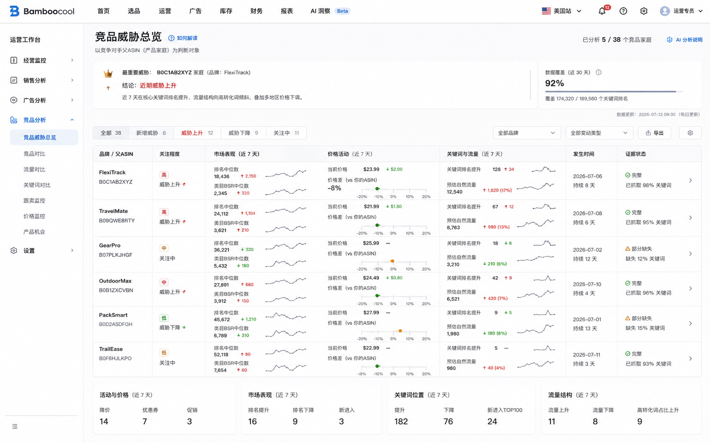
- 威胁比较表（内嵌趋势线 + 价差对比）
- 按变化类型筛选（降价、排名、关键词、流量）
- 关注程度与证据状态
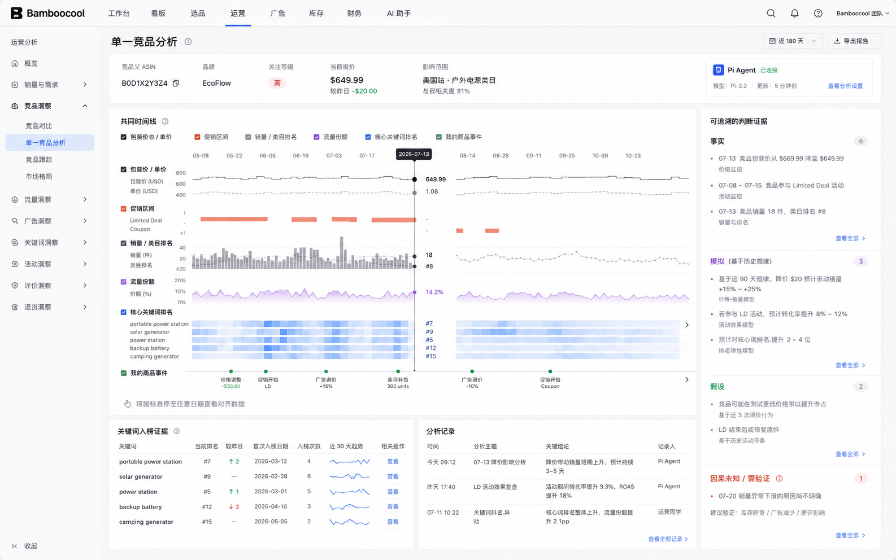
- 六条轨道共用一条时间轴（价格、促销、排名、流量、关键词、自有事件）
- 区分事实、推测和假设
- 关键词交叉证据
广告分析
管的是广告钱花得值不值——异常定位和调整建议。
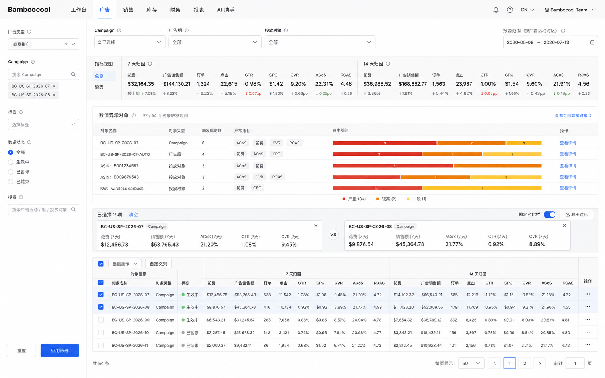
- 严格按 7 天 / 14 天归因分栏
- 异常规则命中排序
- 勾选两行横向对比
- 广告目的标签（每个广告到底在干什么）
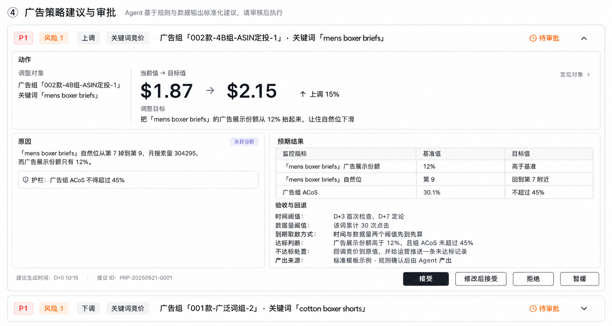
- 三列判断依据（经营约束、广告表现、关键词与竞品证据）
- 四阶段决策链（任务 → 对照 → 诊断 → 调整方案）
- 每条建议：接受 / 修改 / 暂不处理
- 执行后自动回看（达标 = 策略正确，不达标 = 记录下来下次改进）
库存、销量、生命周期
词排名、覆盖、机会
降价、抢位、活动
动作 + 原因 + 预期结果
接受 / 修改 / 暂不处理
调用亚马逊广告 API
抓取关键指标，对比预期
策略正确，记录下来
下次同类情况复用
记录偏差原因
返回 Agent 重新判断
Agent 配置与运行记录
AI 判断的边界和门槛写在明面上，可以改、可以查。
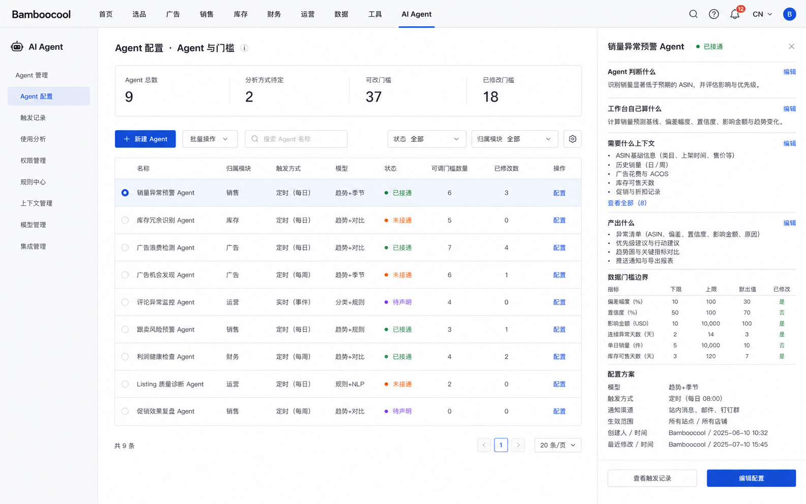
- 每个 Agent：判断什么 / 工作台自己算什么
- 需要什么数据 / 产出什么结果
- 门槛参数可在线调整，调完页面立刻重算
- 配置方案（方案一 / 方案二可切换对比）
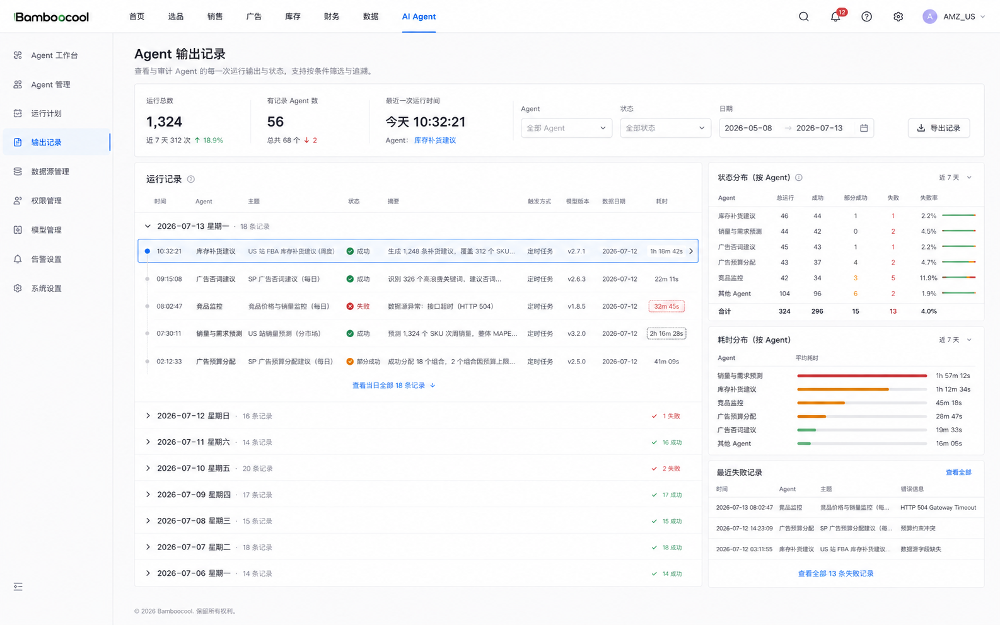
- 按天分组的运行时间线
- 成功 / 失败状态、耗时、模型版本
- 判断了谁、结论是什么
- 点击可查完整详情
运营总览
早上打开只看这一页。
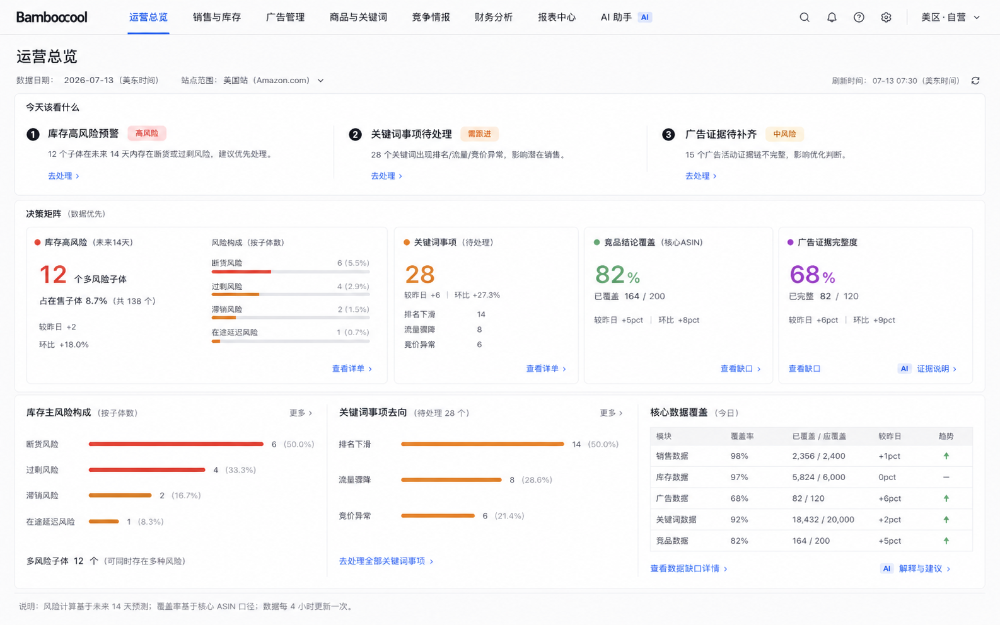
- 三条带优先级的判断，各自跳到对应模块
- 四模块状态矩阵（库存风险数 / 关键词待处理 / 竞品覆盖率 / 广告证据完整度）
- 核心数据覆盖状态
预期效果
| 环节 | 现在 | 接入后 |
|---|---|---|
| 预投准确度 | 运营凭经验填 Excel，各人偏差不同 | AI 基于历史 + 活动 + 生命周期给建议，运营只复核异常行 |
| 库存风险 | 人工逐个翻表 | 系统自动标出高风险对象并排优先级 |
| 关键词布局 | 人工盯排名变化 | 系统识别机会与风险词，给出优先级和下一步 |
| 竞品监控 | 不定期手动查看 | 每周自动比对，变化自动标出 |
| 广告调整 | 人工看报表做判断 | AI 出诊断和建议，运营确认后执行 |
所有 AI 建议均需运营确认才生效，判断边界和门槛透明可调，每次运行有完整记录可追溯。
数据安全
数据怎么来、存在哪、谁能看、谁能导出，都有明确边界。两个方案的区别只在模型跑在哪——数据来源、权限管理这两头是一样的。
方案一 接公有云 API
调用时只把当前这一次判断需要的字段送出去，不传全库。成本按用量算，随时可开始。
不需要手动导出亚马逊后台数据
加密传输、加密存储
浏览器打开即用
方案二 自己配置 GPU
GPU 租或买都可以，起在贵司自己的云账号或机房里。数据和模型都不出贵司环境，也是模型微调的前提。
这一步两个方案没有区别
自己的云账号或机房内
判断全程不出网，可用自有数据微调
权限管理
不同角色配备不同权限，看到的数据和能做的操作不一样。两个方案下都一样。
| 权限项 | 说明 |
|---|---|
| 页面访问权限 | 不同人能进不同模块——比如运营能看库存和广告，财务只能看库存和仓储费 |
| 数据查看权限 | 控制每个人能看到哪些数据范围（按店铺、按负责人、按产品线） |
| 导出权限 | 只有被授权的人才能导出 Excel 和预投表 |
| 输入/修改权限 | 预投表的「我要投」、广告决策的「接受/修改」，需要对应权限才能操作 |
| Agent 配置权限 | 门槛参数的调整、配置方案的切换，仅管理员可操作 |